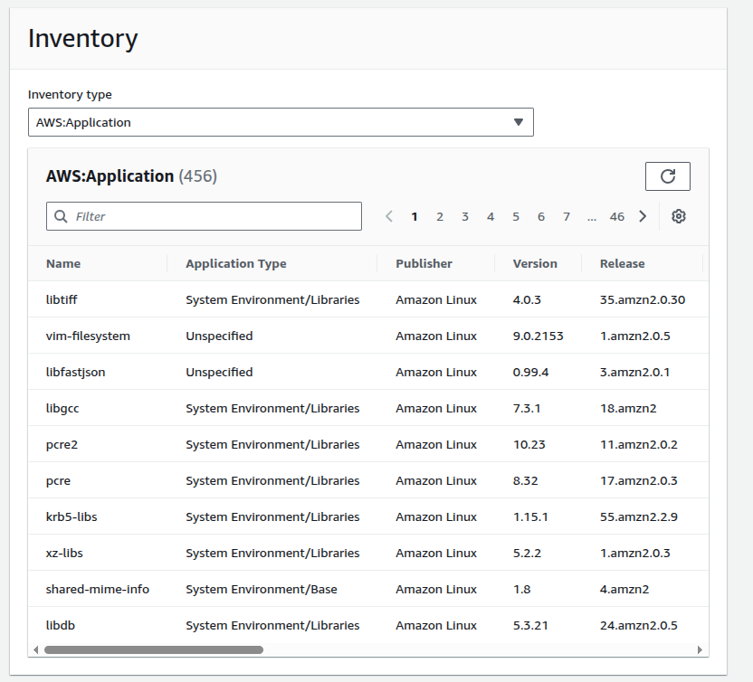
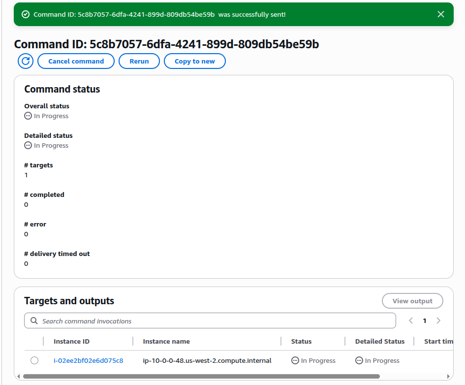
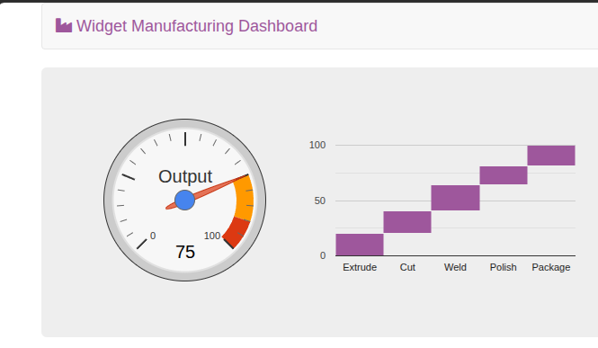
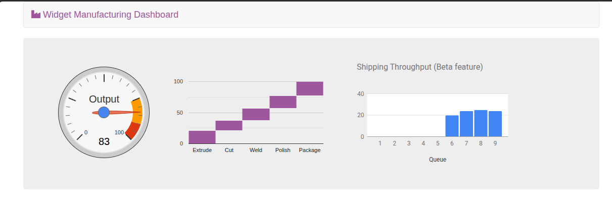
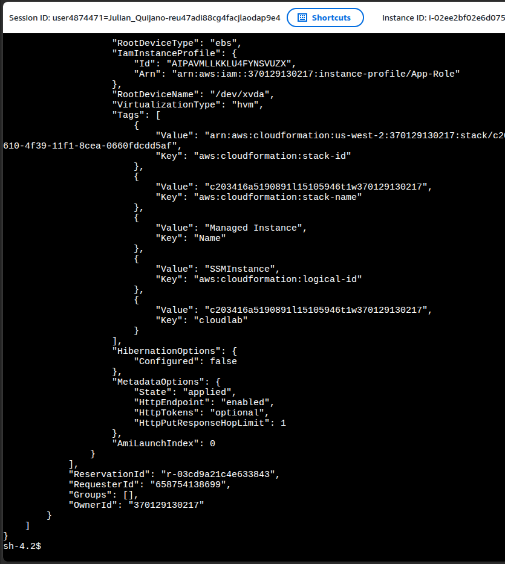

Four capabilities, one instance
Fleet Manager + Run Command + Parameter Store + Session Manager covered the full lifecycle: inspect → install → configure → access.
Operate an EC2 instance entirely without SSH using four capabilities of AWS Systems Manager: Fleet Manager (inventory), Run Command (remote execution), Parameter Store (configuration), and Session Manager (auditable shell). All access is brokered by the SSM agent plus an IAM instance profile — no port 22, no key pairs, no bastion host.
A single EC2 instance (i-02ee2bf02e6d075c8 in us-west-2) was managed
end-to-end through SSM: software inventory was gathered through Fleet Manager, the
Widget Manufacturing Dashboard web app was installed via Run Command,
a feature flag was toggled through Parameter Store, and the instance shell was reached through
Session Manager — never opening port 22.
Fleet Manager + Run Command + Parameter Store + Session Manager covered the full lifecycle: inspect → install → configure → access.
No PuTTY, no key pair download, no port 22 open. The IAM instance profile App-Role
plus the SSM agent replaced the entire bastion / SSH workflow.
A single EC2 instance pre-configured as a Managed Instance. The SSM agent runs inside the OS and dials out to the SSM service; the instance profile authorizes that connection. The user interacts with SSM from the console — never directly with the instance.
| Component | Identifier | Role in the lab |
|---|---|---|
| EC2 Managed Instance | i-02ee2bf02e6d075c8 · ip-10-0-0-48 |
Target for every SSM operation. Pre-installed SSM agent. |
| IAM Instance Profile | arn:aws:iam::370129130217:instance-profile/App-Role |
Grants the SSM agent permission to register and accept commands. |
| Region | us-west-2 |
All resources scoped here. Derived dynamically from IMDS in Task 4. |
| Web app target | Apache + PHP + AWS SDK + Widget Manufacturing Dashboard | Installed by Run Command. Reads /dashboard/* from Parameter Store at request time. |
One section per SSM capability. Trivial console navigation is collapsed into prose; each section ends with the evidence captured during the lab.
Inside Systems Manager → Node Management → Fleet Manager,
opened the Account management dropdown and chose Set up inventory.
Created an association named Inventory-Association targeting the Managed Instance
manually. Defaults were left intact.

AWS:Application: 456 packages
detected on the Managed Instance, no SSH required.AWS:Application returns rows, every later capability will work.
Under Node Management → Run Command, picked the custom document Install Dashboard App (filtered by Owner = Owned by me). That document runs an install script that lays down Apache, PHP, the AWS SDK, and the dashboard files, then starts the web server. Targets were specified manually (Managed Instance) and the S3 output bucket option was cleared.
aws ssm send-command)
is the same call you'd put in a script or CI pipeline — the GUI is just a wizard around it.
5c8b7057-6dfa-4241-899d-809db54be59b dispatched to
i-02ee2bf02e6d075c8. Status: In Progress while the install script runs.After the command finished, the ServerIP value from the lab Credentials panel was opened in a browser. The dashboard rendered with two charts — output gauge and stage throughput bar — confirming that Apache, PHP, the SDK, and the app were all installed and the service was up.

Under Application Management → Parameter Store, created a parameter with the configuration below. No screenshot of the form — the dashboard's third chart is the proof that the value was picked up.
| Field | Value |
|---|---|
| Name | /dashboard/show-beta-features |
| Description | Display beta features |
| Tier | Standard (default) |
| Type | String (default) |
| Value | True |
/dashboard/<option> is intentional — Parameter
Store supports path queries (get-parameters-by-path), so the whole namespace
is one fetch from the application.
/dashboard/show-beta-features = True: the third
chart Shipping Throughput (Beta feature) appears. Same code, no redeploy.
Under Node Management → Session Manager, started a session
against the Managed Instance. A browser tab opened with a working shell as
sh-4.2$ — no keypair, no port 22, no bastion. The session ID and the instance ID
are stamped at the top of the terminal banner, which is what CloudTrail correlates for audit.
ls /var/www/html# Get region from IMDS
AZ=$(curl -s http://169.254.169.254/latest/meta-data/placement/availability-zone)
export AWS_DEFAULT_REGION=${AZ::-1}
# List information about EC2 instances
aws ec2 describe-instances${AZ::-1} trim is the small clever bit — IMDS returns the AZ
(us-west-2a); slicing off the trailing letter yields the region
(us-west-2) without hardcoding it. The same script works in any region.arn:aws:iam::370129130217:instance-profile/App-Role and the tag
Name = Managed Instance matches everything seen in the console.
aws ec2 describe-instances JSON output.
The IAM instance profile App-Role and the SSM-managed identity are visible
from inside the box. The prompt sh-4.2$ is the browser-based shell — no SSH client.ec2detailsfromSSH.png. It is not SSH — that's literally what this task
teaches. Session Manager looks like SSH from the user's seat, but the connection is an
outbound HTTPS tunnel brokered by the SSM agent. The file was renamed to
05-session-manager-describe-instances.png so the evidence matches the lesson.
"MetadataOptions": { "HttpTokens": "optional" }. That means this lab instance
still accepts IMDSv1 requests. Production hardening would set
HttpTokens: required to force IMDSv2 session tokens and block
SSRF-style metadata abuse. Worth noting because the IMDS endpoint
169.254.169.254 was used in the script above.
Quick map of the four SSM capabilities exercised, what they replace, and the key prerequisite shared by all of them.
| Capability | What it does | Replaces | Evidence |
|---|---|---|---|
| Fleet Manager | Periodically collects OS, package, network, and service inventory via an SSM association. | SSH + rpm -qa / dpkg -l loops; agent-based CMDB tools. |
456 apps listed under AWS:Application |
| Run Command | Executes a pre-approved document on one or many instances; supports tag-based fleet selection. | SSH + bash for-loops; Ansible ad-hoc against managed hosts. | Command ID 5c8b7057-…59b → dashboard live |
| Parameter Store | Hierarchical key/value store. Polled by the app at request time for feature flags & config. | Config files baked into AMIs; environment variables requiring restart. | Third dashboard chart appeared on refresh |
| Session Manager | Browser- or CLI-based shell brokered by the SSM agent. Auditable through CloudTrail. | SSH on port 22 + bastion hosts + key-pair rotation. | Browser shell running aws ec2 describe-instances |
AmazonSSMManagedInstanceCore. Without that pairing,
none of the four capabilities can reach the instance.
aws ssm send-command —
the GUI is a wizard around the CLI, the CLI is what you put in pipelines./dashboard/*) is enough to ship
a working feature-flag pattern without redeploying.169.254.169.254 is the canonical way to make scripts region-aware.
HttpTokens: optional means the instance still accepts IMDSv1 — production
should require IMDSv2.The SSH workflow established in earlier labs (PuTTY + .ppk key + port 22) is not the only way to operate an EC2 instance — and in many production environments it is the wrong way. AWS Systems Manager folds inspection, remote execution, configuration, and interactive access into a single agent-plus-IAM pattern. Once the instance profile is in place, the inbound network surface for management can drop to zero.
The lab also illustrates an honest operational pattern: the "In Progress" screenshot from Run Command isn't really the success signal — the rendered dashboard is. And the "misnamed SSH screenshot" from Task 4 is the lab's actual punchline: it looks like SSH, it isn't, and that's the point.